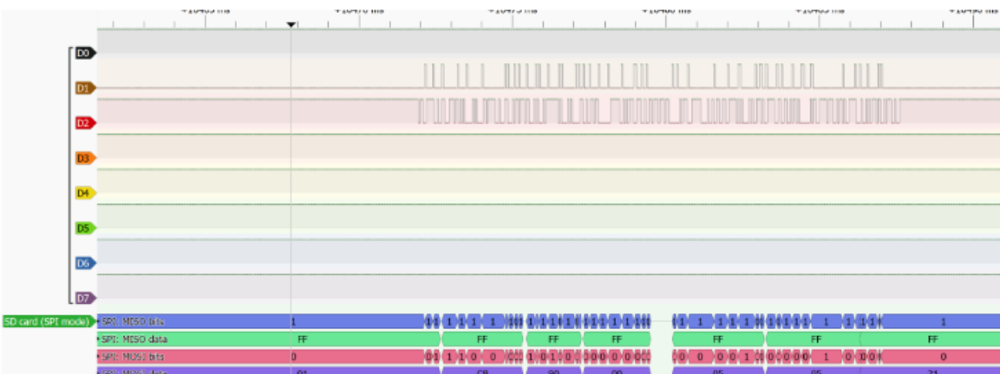
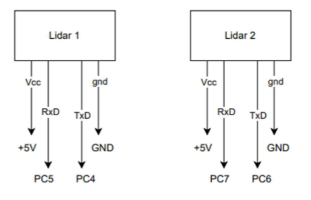
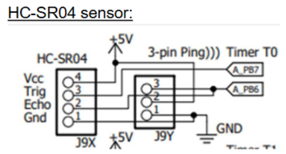
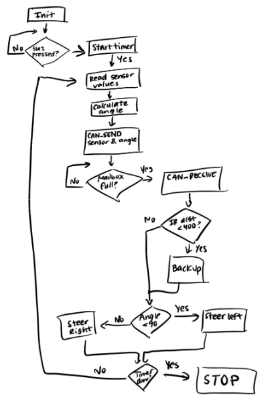
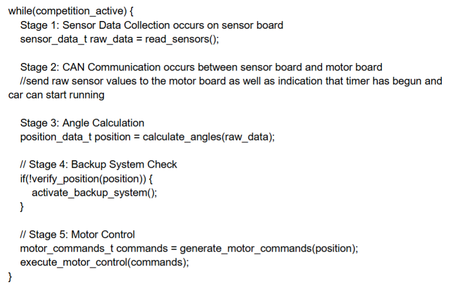

Sonic Vision: A Head-mounted Depth Perception Device
This project focuses on building a tool for visually impaired users to percieve depths in short ranges using haptic feedback from servo motors. I worked on this project as a team of 3 engineers as part of the Cockrell School 48-hour Design Makeathon. This project was took us around 2 days to complete (October 2023). This project was selected as a finallist by the Makeathon panel.
Key Features
- Low-cost head-mounted device that provides haptic feedback to blind users
- Control algorithm + time delays to synchronize array of ultrasonic sensors
- Cross-sensor minimization subroutines
Tech Stack
- Programming: C#
- Hardware: Arduino Uno Microcontroller
- Environment: Arduino IDE
Design Process
- Memory Management: We implemented a File Allocation Table (FAT) file system abstraction to manage memory. In order to implement processes in our RTOS, we worked on a SPI driver for an SD card. Doing so, I learned about the SPI protocol. Later we wrote code to implement the FAT, which involves creating a directory to store file metadata (file names, sizes, starting locations) and 512-byte chunks where data is stored. 
- Sensor Data Acquisition: We continually read in 3 distance sensor values per sample: one in the center pointing straight ahead, and two 45 degrees on the left/right. This gives us 3 data points to generate coefficients for a corresponding parabola. We calculate the vertex of the parabola and use inverse trig to find the angle to that vertex. The magnitude of this angle is used in the motor control algorithm. We mainly use the TF Luna LIDAR sensor, as it provides smooth, accurate digital readings via UART.  
- Motor Control and Race Strategy: We began with a call-graph to formulate a high-level strategy. Motors are controlled using differential steering. We apply a base power to both motors, and then use the input angle from LIDAR sensors to calculate an offset value. When turning right, we add the offset to the left wheel and subtract from the right (and vice versa). The offset is refined using a PD control algorithm before being applied as the PWM duty cycle.  
- Testing & Tuning: Once the kernel, sensors, and motors were fully initialized, we tuned the PD control. Our team set up multiple race tracks, measured the robot's response to sharp turns, and adjusted the Kp and Kd values of our control algorithm accordingly.
Major Challenges & Key Takeaways
- OS Kernel Bugs: Our kernel has overcome many bugs. Some of the most notable (and hardest to debug) were leaving OS Sleep and Kill functions within interrupts, branching to null address pointers when all tasks are sleeping, and conetxt switching within an interrupt instead of after exiting the interrupt handler.
- Motor PWM: Towards the end, after we implemented differential steering, we often ran into cases where the MCU would reset and the code would enter the Hard Fault Handler. The reason for this is that when we set our motor PWM duty cycle above 80-90%, this would draw too much current and cause the MCU to reset. We fixed this by capping our duty cycle to 80%.
- Key Takeaways + Skils:
- Reading online
- Reading the disassembly window + understanding compiler optimizations
- Reading sensor datasheets to write drivers!


Demos
The Initial Run
April 12,2025: This is our robot's first run... At this stage it collided into many walls, which we learnt was mainly because we had not (yet) tuned our PID controller.
A Few Iterations In
April 15, 2025: At this stage, our robot is moving much faster... By now, we have added differential steering allowing for much faster, tighter turns. Also, adding a back-up subroutine was a game-changer, allowing for even higher motor speeds.
Race Day
April 24, 2025: This is our robot on race day... We placed 3rd overall, check out this epic pass! 🏎️🏎️🏎️